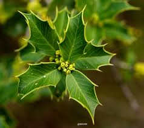

üçÄ ESPINHEIRA SANTA (Maytenus ilicifolia e Maytenus aquifolium)
Visualização 3D
Carregando modelo 3D...
Iniciando...
Gire o modelo com o mouse e use a rodinha para zoom
Sinônimos
- Cancorosa
- Cancorosa-de-sete-espinhos
- Espinheira-divina
- Erva-santa
- Maiteno
Descrição da Planta
- Porte: Árvore pequena (1,5-2m de altura)
- Caule: Verde-acinzentado, lenhoso e ramificado
- Folhas:
- Simples e coriáceas (rígidas)
- Forma elíptica com margens espinhosas
- Ápice agudo
- Flores:
- Muito pequenas (5 pétalas)
- Cor amarelo-esverdeada
- Florescimento: junho a agosto
- Frutos: Alaranjados, ovais com 1-2 sementes vermelhas
Para Que Serve
- Uso popular:
- Prevenção do câncer
- Tratamento de feridas
- Uso terapêutico interno:
- Gastrite e úlceras gástricas/duodenais
- Aumenta secreção de muco gástrico
- Reduz acidez estomacal
- Ação anti-inflamatória
- Uso externo:
- Cicatrização (acne, eczema, herpes)
- Feridas cutâneas
Como Usar
Infusão (Uso Interno)
- 1 colher de sopa (3g) de folhas secas
- 150mL de água fervente
- Infundir por 5-10 minutos
- Coe e beba morno
Posologia: 3-4 xícaras/dia (1h após refeições e antes de dormir)
Duração: Máximo 28 dias de tratamento
⚠️ Não ultrapassar a dose recomendada - pode causar irritação gástrica
Cuidados e Contraindicações
- Contraindicações absolutas:
- Grávidas
- Lactantes (reduz produção de leite)
- Crianças menores de 6 anos
- Interações medicamentosas:
- Antibióticos (piora absorção)
- Barbitúricos
- Efeitos adversos:
- Irritação gástrica (em excesso)
- Vômitos, cólicas e diarreia (superdosagem)
Cultivo
- Propagação:
- Sementes
- Rebentos de raiz (divisão de touceira)
- Estacas
- Espaçamento: 2m entre mudas
- Crescimento: Muito lento
- Clima ideal: Subtropical
- Solo: Fértil e úmido
- Colheita: Final do verão
- Origem: Sul do Brasil, Argentina, Paraguai
Curiosidades
- Principais compostos: Taninos (marcadores), maitenina (triterpeno)
- Contém flavonoides (quercetina, isoquercitrina)
- Folhas possuem espinhos característicos
- Usada tradicionalmente por povos do sul da América
- Incluída na Farmacopeia Brasileira (2019)
Referências
- Farmacopeia Brasileira (ANVISA, 2019)
- Manual CRF-SP (2019)
- Cartilha de Plantas Medicinais - SUS Campinas
- Mariot & Barbieri - Estudos sobre metabólitos
Monografia Científica
Baixar PDF Completo
Estudo detalhado pela UNICAMP - Departamento de Farmacognosia
Voltar para Catálogo